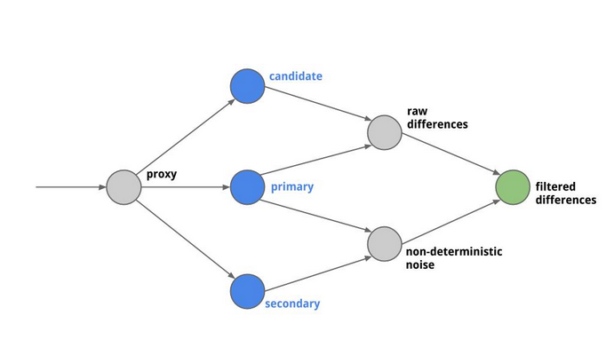
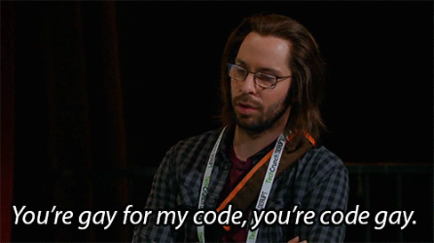

Hello World
CodeTengu Weekly 碼天狗週刊
CodeTengu Weekly 會在 GMT+8 時區的每個禮拜一早上 10:00 出刊，每一期會從目前的 curator 名單中選出三位來負責當期的內容，每一位 curator 各自負責不同的領域，如果你在這一期沒有看到自已感興趣的東西，說不定下一期就會有了。你也可以瀏覽一下前幾期的內容，有價值的東西是不會過時的。
以下是目前的 curator 陣容：
- @vinta - I failed the Turing Test - 科幻迷，最近在讀「家畜人鴉俘」
- @saiday - Imnotyourson - 太熱了
- @tzangms - Oceanic / 人生海海 - 衝動型購物
- @fukuball - ImFukuball - 最近好窮，有案子可以接嗎？
- @wancw - 命剋公司的工程師
- @mingderwang
- @kako0507 - 熱愛嘗試新事物的前端工程師
- @chiahsien - Nelson
- @hiroshiyui - 非典型司書
- @uranusjr - Smaller Things - 聽說這是技術週刊，可是我不愛談技術怎麼辦
- @kkdai - 態度萬歲 - 喜歡 Golang 的略懂工程師
大家也可以關注 CodeTengu 的 Facebook、Twitter、GitHub 或微博，有很多 Weekly 看不到的內容。有任何建議或疑問也可以來 Gitter 聊聊，歡迎亂入 👺
 @vinta
@vinta
[Python] 原来你是这样的修饰器
這一篇介紹 decorator 的文章寫得還不錯，提到了帶參數、不帶參數的 decorator 的寫法和 decorator 其實也可以用來裝飾 class。不只這樣，decorator 本身也可以是一個 class ── 所謂的 class-based decorator。
除此之外，文章裡用 decorator 來做欄位的 validation 的想法好像挺不錯的啊。
延伸閱讀：
Machete-mode Debugging
上禮拜心血來潮決定，每天上班都先看個一管技術 conference 的 talk 影片再開始工作，學學新技術也順便練一下英文，推薦所有工作量不飽和的上班族可以試試。然後再跟大家分享一下，我特別喜歡看一些歐洲 conference 的影片，因為總是有很多口音各異的講者，聽他們講程式術語別有一番風味。尤其是一些英國人，特別浮誇，一上來就吼了一段莎士比亞。
Mastering Python Design Patterns
最近在讀 Refactoring，果然這種書是要寫過一陣子程式之後才適合讀的啊（但是作者話真的超多），小時候看的時候根本沒感覺。而且一邊讀會一邊發現自己還有哪些知識需要補強，像我讀到一半就發現對作者提到的幾個 design patterns 不太熟悉，所以又決定先跑去讀 Mastering Python Design Patterns。
Mastering Python Design Patterns 這本書不錯的地方是它在介紹每個 design pattern 的時候都會各用一個 real-life example 和一個 software example 來舉例，例如作者會告訴你某某知名的 Python library 就是用了某個 pattern。
ES6 Promise 筆記
這禮拜在寫 LambdaBaku 的時候踩了不少 Promise 的雷，就像所有 JavaScript 的那些容易使人犯錯的特性一樣，所以就花了一點時間研究一下 Promise 的用法，順便整理成筆記（這些筆記的重點向來都是 references 啊，希望大家不要錯過那些 ref: 底下的連結）。
延伸閱讀：
- JavaScript Promise 迷你书 - @wancw 在 Issue 5 分享過
- We have a problem with promises
題外話，常常看到有初學者在問該學什麼程式語言比較好的時候，就會有人跳出來說什麼「語言只是工具，學什麼語言不重要」之類的屁話，誒，是在供殺小，語言怎麼可能不重要！先不要談社群風氣、學習資源和之後好不好找工作之類的實際問題，就語言本身，難道你用靜態語言寫程式的「套路」會跟用動態語言的時候一樣嗎？一定不會嘛，因為不同語言的風格、思想、原則，甚至是語言本身的設計理念都不同啊。所以，要嘛你真的厲害到看透了程式設計的本質，要嘛你就是把不同的語言都當成是同一種錘子。
We need tool support for keyset pagination — No Offset
我們都知道 OFFSET 和 LIMIT 可以在 SQL 裡做分頁，但是 OFFSET 有幾個缺點，一是要 skip 過的數量很大時就會效率不好（但是也不能怪他，幾乎所有我們平常用得很開心的東西，只要大到一個數量級之後效能都會不好啊，總之至少要加個 index 啦）；二是在撈下一頁的時候，如果這一批數據有增減，你用 OFFSET 拿到的分頁後的數據就可能不是你預期的。
所以有另外一種不需要用到 OFFSET 的分頁方法叫做 Keyset pagination（又稱 seek method），簡單說就是當你要撈下一頁的時候，用目前這一頁的資料在 WHERE 過濾出那些你還沒看過的資料（當然還要加上你原本的 WHERE 條件）。
延伸閱讀：
 @wancw
@wancw
Eight Ways Your Android App Can Leak Memory
8 種 Android App 常見的 memory leak 情境，以及該注意的地方：
- Static Activities
- Static Views
- Inner Classes
- Anonymous Classes
- Handlers
- Threads
- Timer Tasks
- Sensor Manager
也有中文版
让 Code Review 成为一种习惯
作者在騰訊廣點通參與 code review 導入的過程與心得分享。包含 code review 可以帶來哪些好處以及一個良好的 code review 文化應該是什麼樣子。
如果你還在懷疑 code review 的好處或是在團隊中推行遇到阻礙，都值得一看。
延伸閱讀：
- 大澤木小鐵的 code review 心得，其中提到了 code review 三要素 A.S.K. (Ask why, Suggestion, Knowledge) 。

[Tool] Find potential bugs in your services with Diffy
繼續分享有趣的專案或工具， 這是是 Diffy —— Twitter 自家的 HTTP/API server 除錯工具。
它會從 3 台 server（2 台執行穩定的舊版、1 台執行新版）的輸出中找出比較值得關注的差異，以判斷新版的 code 是否運作正常。
專案放在 https://github.com/twitter/diffy ，也有 Docker 跟 docker-compose 設定可供參考。
[求職] Questions to ask your interviewer
找工作的時候該問面試官 (1) 什麼問題才能切中要害，得到你想知道的資訊？作者建議問題應該具體、不要太籠統，才不會讓對方靠話術呼攏過去。也列出了一些範例供作參考，以下依個人偏好摘錄：
- (Red Flag) How often are you pulled off your primary task?
- (Technical) How does your development/deployment process work?
- (Culture) What does it take to succeed at this company beyond “hard work”?
- (Culture) If I’m not meeting expectations, how will I know?
我自己喜歡問開發流程、部署流程、溝通工具，大概就可以知道這個團隊運作方式跟我合不合得來。
延伸閱讀：
- 如果你是要代表團隊面試求職者的話，作者也寫了 How I Interview 。
備註：
- 大家不覺得中文用「面試『官』」實在太貶低求職者了嗎？
Two Legs Bad
此處有 bug：程序員統治的黑暗世界
在攫取收益的同時，這些互聯網企業常常拒絕對為他們工作的勞動者承擔責任。在國內，我們看到一些分享經濟「平台」以「解放手藝人」、「實現財務、時間、心靈三大自由」等口號吸引勞動者，卻並不提供國家明文規定的勞動保障。這些企業有一個常見的邏輯：他們提供的只是「平台」，在平台上提供服務的勞動者並非企業的僱員。然而隨著平台壟斷程度的提高，越來越多的勞動者實際上已經在為某個或一兩個平台全職工作。例如一個針對美國網租車司機的調查顯示，超過 90%的 司機服務於 Uber 和 Lyft 兩家平台。當勞動者實際上全職為一家公司服務，再用「平台」的說辭拒絕承認勞動僱傭關係，就純粹是企業轉移風險的手段：將收入不穩定、不可逆轉的資本投入、潛在的犯罪、突發事件的風險都轉嫁到了個人身上。
延伸閱讀：
- 数字时代的劳动与剥削 - 在 Issue 1 有分享過
- 這樣讓我失望的台大是無法變成一所更好的大學的
由 @vinta 分享。
Random Cool Stuff

Making the world a better place
這是 HBO 拍的美劇 Silicon Valley 第一季裡的一個橋段，這是一部少見地以軟體工程師為主角的電視劇，目前拍到第三季，如果你到現在都還沒看過這部美劇，那可是不行的啊，因為這部戲，真的！超！好！笑！
聽說現在矽谷的公司已經開始禁止員工說 We're making the world a better place 了。
不過仔細一想以程式設計師為主角的作品其實也沒那麼少見，畢竟隨便一部 Cyberpunk 作品的主角其實都是程序員啊，我還看過一部男主角是軟體工程師而女主角是 DBA 的太空歌劇小說呢。
由 @vinta 分享。
如何用 IBM Watson 來躲掉視訊會議
作者利用 IBM 的 Watson API 將語音轉成文字，等到會議中出現自己的名字時再透過 HipChat 提醒自己。
這個專案已將開源放在 GitHub 上了： joshnewlan/say_what。
延伸閱讀：
- Now that's what I call a Hacker - 某人把費時超過 90 秒的工作都自動化了
由 @WanCW 分享。